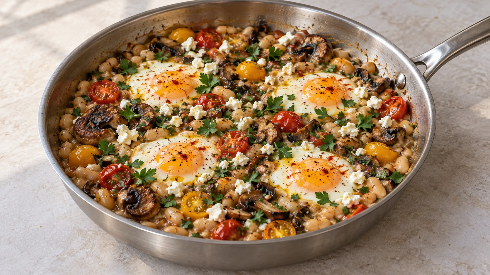

Shakshuka de alubias y portobello

Descargar receta en PDF · A4Más de Legumbres
Ingredientes
- 250 g champiñones portobello
- 10 g chorizo o una pizca de pimentón ahumado
- 15 g perejil de hoja plana
- 1 lata de 400 g alubias blancas (peso neto)
- 100 g tomates cherry maduros
- 4 huevos
- 20 g queso feta
- Aceite de oliva (un chorrito)
- Sal y pimienta negra (al gusto)
- AOVE (un hilo, opcional)
Preparación
Limpia los portobello y sécalos bien. Recorta el extremo terroso y separa los tallos; conserva y pica las partes aprovechables. Deja los sombreros enteros si son pequeños. Pica el chorizo, si lo usas, y el perejil, separando los tallos de las hojas y reservando unas hojas para el final. Corta los tomates por la mitad. Abre la lata de alubias sin tirar el líquido.
Calienta una sartén de unos 28 cm a fuego medio-alto con un chorrito de aceite. Pon los sombreros con la zona del tallo hacia abajo. Si eliges chorizo, añádelo bien picado; incorpora también los tallos de champiñón picados, los tallos de perejil y la mayor parte de sus hojas. Cocina hasta que los portobello se doren, moviendo con cuidado y dándoles la vuelta cuando corresponda. Si eliges pimentón, añádelo al final de este paso, bajando el fuego, y remueve unos segundos antes de incorporar las alubias para que no se queme.
Añade las alubias y aproximadamente la mitad del líquido de su lata. Los 400 g son el peso neto del envase, no 400 g de alubias escurridas. Aplasta algunas con un tenedor para espesar la base, procurando no romper los sombreros. Incorpora los tomates y calienta hasta que el conjunto burbujee suavemente. Prueba y ajusta de sal y pimienta; ten en cuenta que el feta y, si lo usas, el chorizo aportan sal. Si se seca, añade un poco del líquido reservado o agua.
Haz cuatro huecos entre las alubias y casca un huevo en cada uno. Tapa y cocina a fuego medio, comprobando a partir de los 3 minutos. Retira cuando las claras estén cuajadas; prolonga si quieres las yemas más firmes. Evita que el fondo se quede sin líquido.
Desmenuza el feta por encima, añade las hojas de perejil reservadas y un poco de pimienta negra. Termina, si quieres, con un hilo de aceite de oliva virgen extra y sirve enseguida. Puedes acompañar con una tostada integral para mojar.
Claves
Elige una sola alternativa: 10 g de chorizo o una pizca de pimentón ahumado. Con pimentón, la opción es sin carne. Los 400 g de alubias corresponden a una lata con su líquido, como en el original; no al peso escurrido. Reserva parte del líquido para ajustar la textura. Dora los champiñones antes de añadir las alubias y evita quemar el pimentón. Las claras deben quedar cuajadas. El libro indica 15 min; para esta adaptación calcula unos 15-20 min orientativos, según tamaño de los portobello y punto de los huevos.
Fuente
Adaptada de «Mushroom Shakshuka», de Jamie Oliver, en UNO.